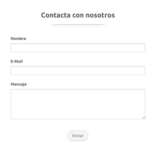

¿Porque es importante el proceso de adopción?
¿Porque es importante el proceso de adopción?
Hay varias formas de colaborar con una casa hogar de mascotas,
desde donaciones hasta voluntariado. Puedes donar dinero o
artículos
esenciales, ofrecerte como voluntario para tareas diarias,
o ayudar a
difundir la labor de la casa hogar para atraer más apoyo.
Formas específicas de colaboración:
Donaciones monetarias
Donaciones en especie
Voluntariado: Cuidado diario-Apoyo administrativo-Apoyo
en eventos
de adopción-Hogares de paso.
